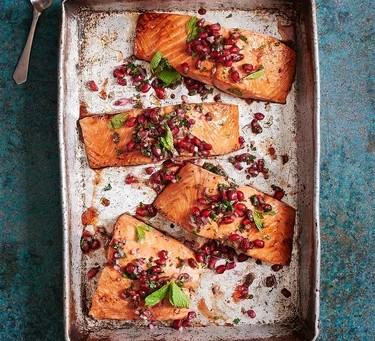

Pomegranate Salmon

Use fresh pomegranate as well as molasses to get a deeper flavour in this salmon recipe. Serve with couscous or steamed green veg, if you like
- 4 salmon fillets
- 2 tbsp pomegranate molasses
- 1 tbsp olive oil
- ½ lime, juiced
- 1 pomegranate, seeds only
- ½ small bunch of parsley, finely chopped
- 4 mint leaves, finely chopped
- 1 small red onion, finely chopped
- couscous and steamed green veg, to serve
Steps
- Put the salmon skin-side down on a large baking sheet. Mix the pomegranate molasses, ½ tbsp olive oil and half the lime juice with a good pinch of salt and a few grinds of black pepper in a small bowl, then brush the mixture all over the flesh of the salmon. Chill for at least 20 mins, or overnight if you can.
- Heat the oven to 200C/180C fan/gas 6. Mix the pomegranate seeds with the parsley, mint, red onion, remaining lime juice and olive oil in a bowl, and set aside.
- Roast the salmon, uncovered, for 10-12 mins, until cooked through. You can check this by poking a knife into the fillet and ensuring the fish flakes easily. Top the salmon with the salsa, and serve with couscous or steamed green veg, if you like.